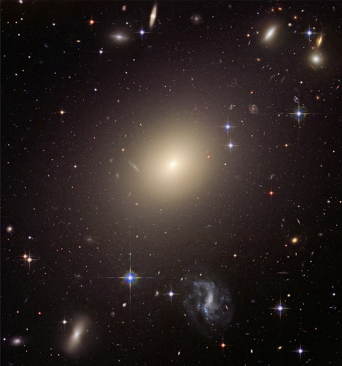
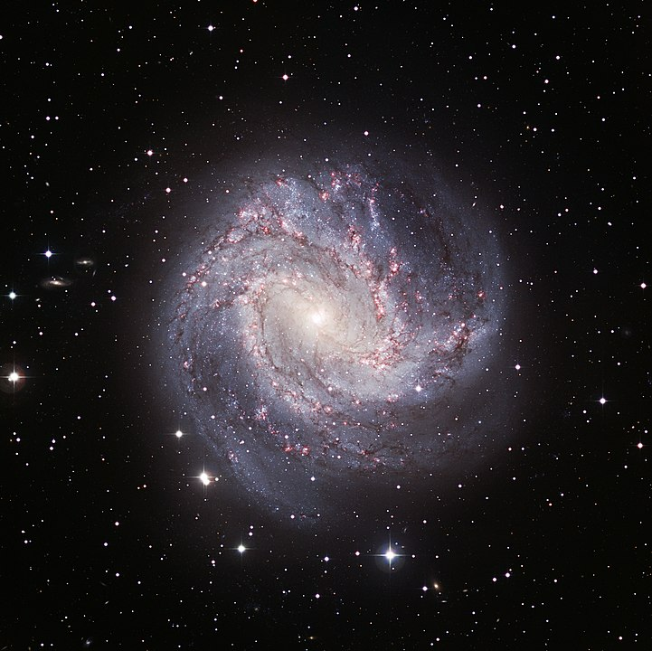
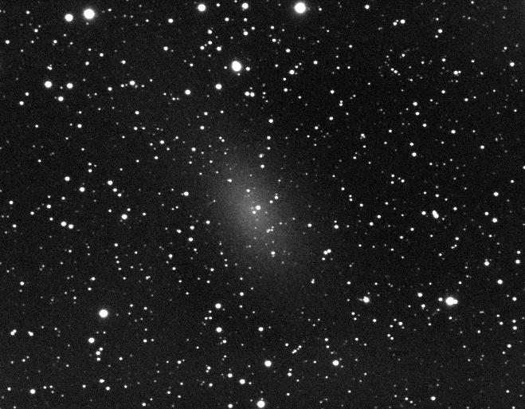
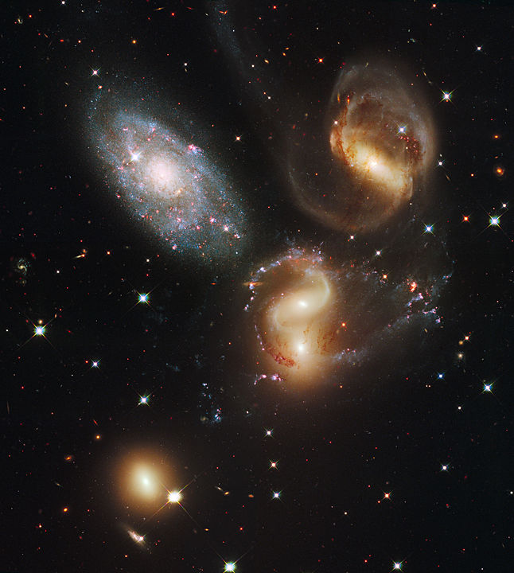
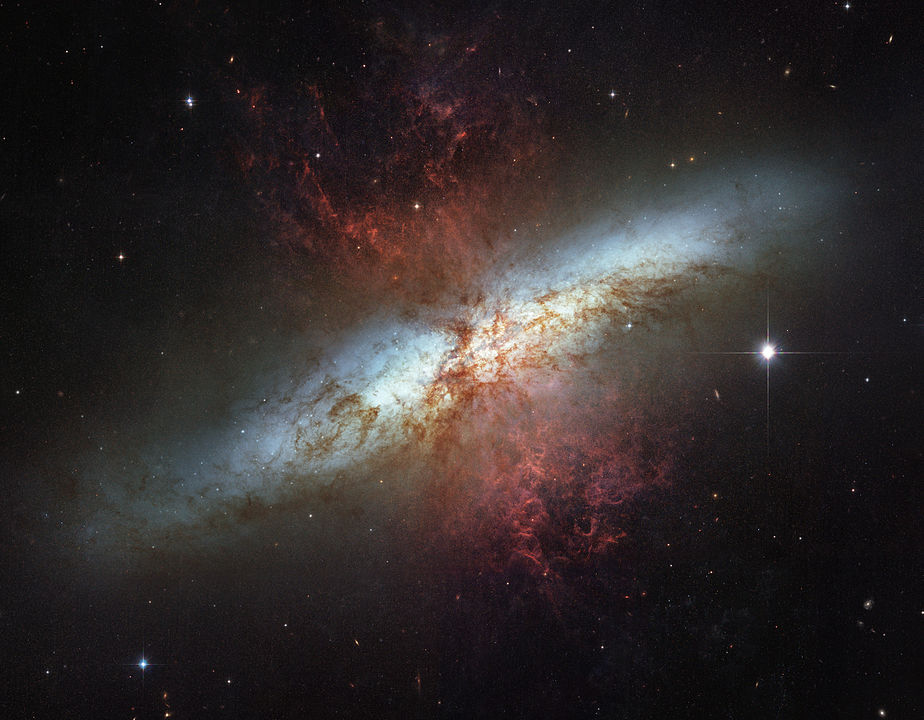
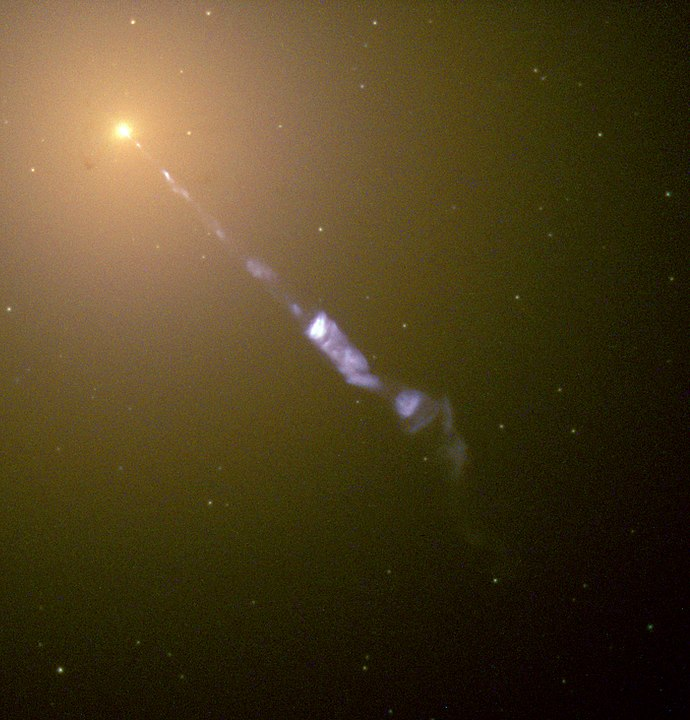

Uma galáxia é um grande sistema, gravitacionalmente ligado, que consiste de estrelas,
remanescentes de estrelas,
um meio interestelar de gás e poeira, e um importante mas insuficientemente conhecido componente
apelidado de matéria escura.
A palavra “galáxia” deriva do grego ‘’galaxias’’ (γαλαξίας), literalmente "leitoso", numa
referência à nossa galáxia, a Via Láctea.
Exemplos de galáxias variam desde as anãs, com até 10 milhões de estrelas, até gigantes com cem
trilhões de estrelas,
todas orbitando o centro de massa da galáxia.
Tipos e morfologias
Existem três tipos principais de galáxias: elípticas, espirais e irregulares. Uma descrição
ligeiramente mais extensa dos tipos de galáxias baseada em sua aparência é dada pela
classificação de Hubble.
Como esta classificação é totalmente baseada no tipo morfológico visual, ela pode desconsiderar
algumas características importantes das galáxias,
como a taxa de fomação de estrelas e a atividade no núcleo.
Hubble Sequence Foto
➲Elípticas

Galáxia elíptica ESO 325-G004
O sistema de classificação de Hubble identifica as galáxias elípticas com base
em sua elipticidade,
variando de E0, quase esféricas, até E7, que são bastante alongadas. Essas galáxias têm um
perfil elipsoidal, o que lhes confere uma aparência elíptica independentemente do ângulo de
visão. A sua aparência mostra pouca estrutura e elas têm tipicamente pouca matéria interestelar.
Consequentemente, essas galáxias também possuem uma porção pequena de aglomerados abertos e uma
taxa reduzida de formação de novas estrelas. Em vez disso, elas são geralmente dominadas por
estrelas mais velhas e evoluídas, que orbitam o centro comum de gravidade em direções
aleatórias.
Neste sentido, elas têm alguma similaridade com os muito menores aglomerados globulares.
As maiores galáxias são elípticas gigantes. Acredita-se que muitas galáxias elípticas se formam
devido à interação de galáxias,
resultando em colisões e junções. Elas podem crescer a tamanhos enormes (comparados com os das
galáxias espirais)
e galáxias elípticas gigantes são frequentemente encontradas perto do núcleo de grandes
aglomerados de galáxias.
Galáxias starburst são o resultado de uma colisão galáctica, que pode levar à formação de uma
galáxia elíptica.
➲Espirais

Galáxia do Cata-vento
Galáxias espirais consistem de um disco giratório de estrelas e meio
interestelar,
juntamente com um bulbo central destacado, composto geralmente de estrelas mais velhas.
Estendendo-se para fora deste bulbo existem braços relativamente brilhantes.
Na classificação de Hubble, as galáxias espirais são indicadas como tipo S, seguido por uma
letra (a, b ou c)
que indica o grau de aperto dos braços espirais e o tamanho do bulbo central.
Uma galáxia Sa tem braços apertados e pouco definidos, com uma região de núcleo relativamente
grande.
No outro extremo, uma galáxia Sc tem braços abertos e bem definidos e uma pequena região de
núcleo.
Uma galáxia com braços pouco definidos é às vezes chamada de galáxia espiral floculenta,
em contraste com as galáxias espirais de grande desenho, que têm braços espirais proeminentes e
bem definidos.
Em galáxias espirais, os braços têm a forma aproximada de espirais logarítmicas,
um padrão que pode ser teoricamente demonstrado como resultado de uma perturbação em uma massa
de estrelas girando uniformemente.
Como as estrelas, os braços espirais giram em torno do centro da galáxia, mas eles o fazem com
velocidade angular constante.
Acredita-se que os braços espirais sejam áreas de matéria de alta densidade, ou "ondas de
densidade".
À medida que as estrelas se movem através de um braço,
a velocidade espacial de cada sistema estelar é modificada pela força gravitacional da maior
densidade e a velocidade retorna ao normal depois que a estrela sai pelo outro lado do braço.
Este efeito é similar a uma “onda” de desacelerações movendo-se ao longo de uma rodovia cheia de
carros em movimento.
Os braços são visíveis porque a alta densidade facilita a formação de estrelas, portanto eles
abrigam muitas estrelas jovens e brilhantes.
A maioria das galáxias espirais possui uma faixa linear de estrelas em forma de barra que se
estende para fora de cada lado do núcleo e depois se junta à estrutura do braço espiral.
Na classificação de Hubble, elas são designadas por um SB, seguido de uma letra minúscula (a, b
ou c) que indica a forma do braço espiral,
da mesma forma como são categorizadas as galáxias espirais normais.
Acredita-se que as barras sejam estruturas temporárias que podem ocorrer como resultado de uma
onda de densidade irradiando-se para fora do núcleo,
ou devido a uma interação de maré com outra galáxia. Muitas galáxias espirais barradas são
ativas, possivelmente como resultado de gás sendo canalizado para o núcleo ao longo dos braços.
A Via Láctea é uma grande galáxia espiral barrada em forma de disco, com cerca de 30 mil parsecs
de diâmetro
e mil parsecs de espessura.
Ela contém cerca de 200 bilhões de estrelas e tem uma massa total de 600 bilhões de vezes a
massa do Sol.
➲Irregulares
Grande Nuvem de Magalhães
Galáxias peculiares são formações galácticas que desenvolvem propriedades não
usuais devido a interações de maré com outras galáxias.
Um exemplo disto é a galáxia em anel, que possui uma estrutura de estrelas e meio interestelar
em forma de anel,
circundando um núcleo vazio. Acredita-se que uma galáxia em anel acontece quando uma galáxia
pequena passa pelo núcleo de uma galáxia espiral.
Um evento desses pode ter afetado a Galáxia de Andrômeda, uma vez que ela apresenta uma
estrutura multi-anel quando observada pela radiação infravermelha.
Uma galáxia lenticular é uma forma intermediária que possui propriedades tanto de galáxias
elípticas quanto de espirais. Elas são categorizadas como tipo S0 na classificação de Hubble e
possuem braços espirais mal definidos, com um halo elíptico de estrelas.
Galáxias lenticulares barradas são denominadas Sb0 na classificação de Hubble.
Além das classificações mencionadas acima, existe um número de galáxias que não podem ser
prontamente classificadas na morfologia espiral ou elíptica. Essas são classificadas como
galáxias irregulares.
Uma galáxia Irr-I possui alguma estrutura, mas não se alinha adequadamente com a classificação
de Hubble. Galáxias Irr-II não possuem qualquer estrutura que se pareça com a classificação de
Hubble e podem ter sido rompidas.
Exemplos próximos de galáxias irregulares (anãs) são as Nuvens de Magalhães.
➨Anãs

NGC 147, galáxia anã esferoidal
Apesar da proeminência das grandes galáxias elípticas e espirais, a maioria
das galáxias no universo parecem ser anãs.
Elas são relativamente pequenas quando comparadas com outras formações galácticas, tendo cerca
de um centésimo do tamanho da Via Láctea e contendo apenas alguns bilhões de estrelas.
Galáxias anãs ultra-compactas recentemente descobertas têm apenas 100 parsecs de largura.
Muitas galáxias anãs podem orbitar uma galáxia maior; a Via Láctea tem pelo menos uma dúzia
desses satélites, estimando-se que haja de 300 a 500 ainda desconhecidos.
Galáxias anãs podem ser classificadas também como elípticas, espirais ou irregulares. Como as
pequenas anãs elípticas têm pouca semelhança com as grandes elípticas,
elas são frequentemente chamadas galáxias anãs esferoidais.
Um estudo de 27 vizinhas da Via Láctea descobriu que em todas as galáxias anãs, a massa central
é de aproximadamente 10 milhões de massas solares,
independentemente de se a galáxia possui milhares ou milhões de estrelas.
Isto levou à sugestão de que as galáxias são grandemente formadas por matéria escura e que o
tamanho mínimo pode indicar uma forma de matéria escura morna,
incapaz de coalescência gravitacional numa escala menor.
Dinâmica e atividades incomuns
➲Interação

Colisão de galáxias no Quinteto de Stephan
A separação média entre galáxias dentro de um aglomerado é de pouco mais de
uma ordem de grandeza maior do que o seu diâmetro. Logo, as interações entre essas galáxias são
relativamente frequentes e têm um papel importante em sua evolução.
Pequenas distâncias entre galáxias resultam em deformações devido a interações de maré e podem
causar trocas de gás e poeira.
Colisões ocorrem quando duas galáxias passam diretamente uma através da outra e têm suficiente
momento relativo para não se juntarem.
As estrelas dentro dessas galáxias que interagem tipicamente passam direto sem colidirem,
entretanto o gás e a poeira dentro das duas formas vão interagir.
Isto pode aumentar a taxa de formação de estrelas, na medida em que o meio interestelar é
rompido e comprimido. Uma colisão pode distorcer severamente a forma de uma ou de ambas as
galáxias,
formando barras, anéis ou estruturas similares a caudas.
No extremo das interações estão as junções de galáxias. Neste caso, o momento relativo das duas
galáxias é insuficiente para permitir que passem uma dentro da outra.
Em vez disso, elas gradualmente se juntam para formar uma única galáxia maior. As junções podem
resultar em mudanças significativas da morfologia, se comparada às das galáxias originais.
Quando uma das galáxias tem massa muito maior, entretanto, o resultado é conhecido como
canibalismo.
Neste caso, a galáxia maior permanece relativamente inalterada pela junção, enquanto a menor é
rasgada em pedaços.
A Via Láctea está atualmente no processo de canibalizar a Galáxia Anã Elíptica de Sagitário e a
Galáxia Anã do Cão Maior.
➲Starburst

M82, galáxia starburst. A taxa de formação de estrelas é 10 vezes maior do que
em
galáxias normais
As estrelas são criadas no interior de galáxias a partir de uma reserva de gás
frio que se transforma em nuvens moleculares gigantes.
Observou-se que estrelas se formam numa taxa excepcional em algumas galáxias, as quais são
chamadas starburst.
Se elas continuassem nesse comportamento, entretanto, elas consumiriam sua reserva de gás em um
tempo menor do que o tempo de vida de uma galáxia.
Logo, a atividade de nascimento de estrelas dura normalmente cerca de dez milhões de anos, um
período relativamente breve na história de uma galáxia.
As galáxias starburst eram mais comuns no início da história do universo e estima-se que,
atualmente, ainda contribuem com 15% da taxa total de produção de estrelas.
As galáxias starburst se caracterizam pela concentração de gás e poeira e pela aparição de novas
estrelas,
inclusive estrelas massivas que ionizam as nuvens circundantes, criando regiões HII. Essas
estrelas massivas produzem supernovas,
resultando em remanescentes em expansão que interagem fortemente com o gás circundante. Essas
explosões provocam uma reação em cadeia de criação de estrelas que se espalha por toda a região
gasosa.
Somente quando o gás disponível foi quase todo consumido ou disperso a atividade de criação de
estrelas chega ao fim.
A criação de estrelas está frequentemente associada com a junção ou interação de galáxias. Um
exemplo típico de uma interação formadora de estrelas é M82, que passou por uma aproximação com
a maior M81.
Galáxias irregulares frequentemente exibem núcleos espaçados de atividade de formação de
estrelas.
➲Núcleo ativo
Uma parte das galáxias observáveis são classificadas como ativas, isto é, uma
significativa porção da produção de energia da galáxia é emitida por uma fonte que não são as
estrelas, a poeira e o meio interestelar.
O modelo padrão para um núcleo galáctico ativo se baseia em um disco de acreção que se forma em
torno de um buraco negro supermaciço na região do núcleo.
A radiação de um núcleo galáctico ativo resulta da energia gravitacional da matéria do disco que
cai no buraco negro.
Em cerca de 10% desses objetos, um par diametralmente oposto de jatos de energia ejeta
partículas do núcleo a velocidades próximas à velocidade da luz.
O mecanismo de produção desses jatos ainda não é bem compreendido.
Galáxias ativas que emitem radiação de alta energia na forma de raios-X são classificadas como
galáxias Seyfert ou quasares, dependendo da luminosidade.
Acredita-se que os blazares sejam galáxias ativas com um jato relativístico apontado na direção
da Terra.
Uma radiogaláxia emite frequências de rádio a partir de jatos relativísticos. Um modelo
unificado desses tipos de galáxias ativas explica suas diferenças baseado no ângulo de visão do
observador.
Possivelmente associados a núcleos galácticos ativos (bem como a regiões de formação estelar)
estão as regiões de linhas de emissão nuclear de baixa ionização
(low ionization nuclear emission-line regions – LINERs). A emissão deste tipo de galáxia é
dominada por elementos fracamente ionizados.
Aproximadamente um terço das galáxias próximas são classificadas como contendo núcleos LINER.

Jato de partículas emitido pelo núcleo da galáxia elíptica M87.